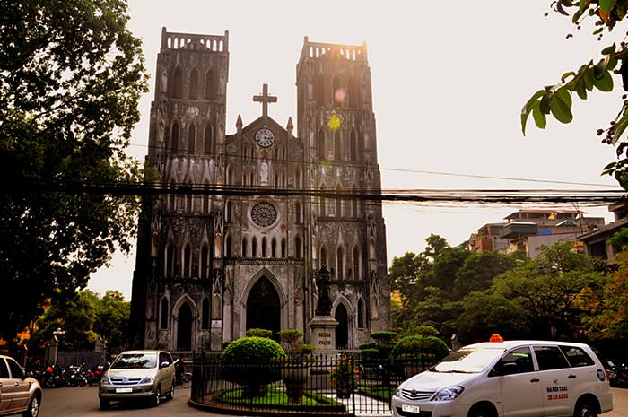

Các Địa Điểm Du Lịch Tại Hà Nội
Hồ Hoàn Kiếm:
hay còn được gọi là Hồ Gươm là biểu tượng của Hà Nội. Gắn với lịch sử lâu đời, Hồ Hoàn Kiếm được coi là biểu tượng chứng kiến lịch sử ngàn năm văn hiến của thủ đô. Hồ Hoàn Kiến - Đền Ngọc Sơn là danh thắng tự nhiên hàng đầu, cả hai điểm du lịch này đều là những danh thắng thu hút du khách bậc nhất của thủ đô.
Văn Miếu Quốc Tử Giám:
Nếu ở Hà Nội coi Hồ Hoàn Kiếm là điểm du lịch gắn với thiên nhiên thì Văn Miếu Quốc Tử Giám được coi là điểm di tích lịch sử văn hóa. Là trường đại học đầu tiên của Việt Nam, Trải qua gần 1000 năm lịch sử. Văn Miếu Quốc Tử Giám vẫn giữ được vẻ cổ kính với đặc điểm kiến trúc của thời đại nhà Lý và là một trong những di tích lịch sử văn hóa tiêu biểu và quan trọng bậc nhất của Thủ đô và cả nước…

Lăng Bác:
Bên cạnh nhiều địa danh ghi dấu lịch sử hào hùng của dân tộc, Quảng trường Ba Đình là địa danh nổi tiếng trong những trang sử hào hùng của dân tộc, cũng là nơi được nhiều người nhắc đến nhất khi du lịch Hà Nội do nằm trong khu vực Hoành Thành Thăng Long, gắn liền với khu di tích chủ tịch Hồ Chí Minh.
Nhà thờ lớn Hà Nội
Là Nhà Thờ Chính Toà của Tổng Giáo phận Hà Nội, cũng là một trong những công trình kiến trúc mang dấp dáng phương Tây đầu tiên được xây tại Hà Nội khoảng thế kỉ 11.
Hồ Tây
Được người dân ví thân mật như lá phổi của chốn Long thành có diện tích rộng hơn 500 ha có đường vòng hồ lên đến 17km với một bề dày lịch sử mấy nghìn năm.